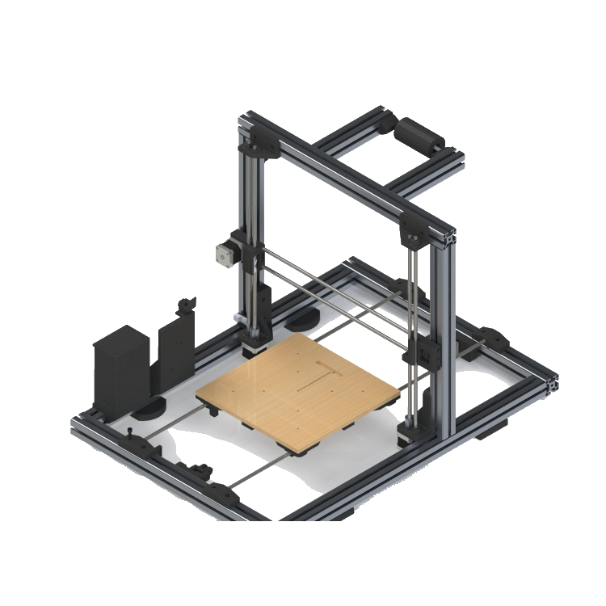
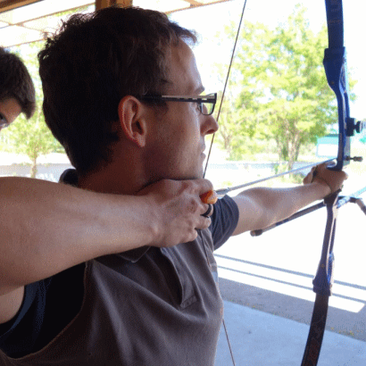

Je m'appelle Guillaume Escande,
Je travaille actuellement chez Capgemini à Toulouse (France) en tant qu'architecte solution senior.
Je suis un fan de toujours d'informatique. Et quand je parle d'informatique, je parle de toute l'informatique, en partant du hardware jusqu'au web, en passant par le cloud, le réseau, le code, etc...
Durant ma carrière j'ai pu intervenir sur bien des domaines. J'ai commencé comme beaucoup par du développement (C, C++) sur des librairies algorithmiques dans le domaine du spatial. J'ai ensuite navigué entre de l'intégration, de la platforme de developpement, de l'infrastructire, de l'IT, du cloud, du DevOps et enfin de l'architecture. L'ensemble de ces activités m'ont permis d'avoir une vision globale d'un système informatique, d'en comprendre le fonctionnement profond et les bonnes pratiques associées. De là en a découlé naturellement la découverte de l'approche Craftmanship et de ses bonnes pratiques.
Je suis également un passioné de DIY.
De l'impression 3D, de l'arduino, de la soudure, de la résine epoxy, tout ces mots me font rêver et je passe pas mal de temps à les utiliser au travers de nombreux projets (plus ou moins finalisés) :
- Fabrication et pilotage de drône
- Distributeur de croquettes automatique pour chat
- Porte de poulailler automatisée
- et bien d'autres
En dehors des mes activités informatiques et DIY, je suis également entraîneur de tir à l'arc depuis 2012, pratiquant de vovinam viet vo dao depuis 2016 et engagé dans le monde associatif (trésorier et secrétaire de club, président de comité départemental).
Je pratique également le trail, triathlon et course à pieds en amateur.
Pour me contacter, je suis disponible par email quand vous le souhaitez.
Expériences professionelles
Architecte Fullstack et Tech lead dans une entité d'expertise autour du craftanship : OneCraft
Mon rôle dans cette entité semblable à une design autority est de faire de l'accompagnement, de la formation ou de l'intervention sur projet.
- Craftmanship
- Clean Code
- Clean Architecture
- SOLID
- DevOps
- Supervision
- Software Factory
- Gestion de Configuration
- Audit
- MVP (Minimum viable product)
- Formation / Coaching
- Formation
Architecte DevOps sur le segment sol Microcarb (CNES)
Ma mission en tant qu'architecte DevOps a été de définir l'ensemble de la stratégie de déploiement, d'intégration et d'exploitation du segment sol complet.
Dans mon rôle, j'ai également pris en charge le déploiement d'une chaine CI/CD et d'une plateforme de dévelopement synchronisée entre le site client et le site industriel.
- Docker
- Ansible
- Python
- Gitlab
- Jenkins
- Artifactory
- Accompagnement client
- Définition d'architecture
- Rédaction de manuel
En tant qu'intégrateur système sur le système CCS (DGA), j'ai développé une procédure de déploiement automatisé pour un système complexe.
J'ai également pris en charge la sécurisation et le hardening de la plateforme en suivant des exigences défense.
- Chef
- Shell
- Ruby
- OpenLdap
- PostgreSQL
- ELK
- Tomcat
- Durcissement OS
- Configuration Hardware réseau
- Déploiement sur site client
Sur la mission GS2.0 j'ai pris en charge l'externalisation d'une équipe de développement initialement chez le client ADS (Airbus Defence & Space) dans les locaux Capgemini.
Dans ce contexte là, j'ai déployé une plateforme de développement haute disponibilité répartie sur plusieurs sites pour recevoir jusqu'à 50 développeurs. Tout ça en suivant les contraintes sécurité et réglementaires associées.
Suite à cela, je suis devenu responsable sécurité du projet.
- Ansible
- CentOS
- OpenSuse
- Stormshield
- Gitlab
- Nexus
- K8S
- Rancher
- FreeIPA
- Graylog
- Centreon
Première vraie activité de développement, j'ai participé à la réalisation des librairies mission de la chaîne de programmation CSO (CNES).
J'ai également pris en charge l'évolution et la maintenance de la plateforme CI/CD du projet et les procédures d'installation / déploiement de l'application.
- C/C++
- Boost / OpenMPI
- Shell
- Python
- RPM
En plus de ces activités projet, j'ai également été impliqué dans des activités transverses au niveau professionnel :
- Animateur de communauté
- Formateur sur des formations techniques (Docker, Git)
- Gestion de carrière
- Responsable sécurité projet
Compétences Technologiques
Architecture et design
Habitué à argumenter des solutions technologiques, j'ai également participé à de la rédacion de propositions techniques pour de gros appels d'offre.
Mon expertise en architecture est trés diverse, j'ai eu à proposer des solutions pour des plateformes de developpement haute-disponibilité (multi-site), des architectures de sécurisation de plateforme ou encore des architectures applicatives pour des segments sols spatiaux.
Initié à des framework comme IAF ou Archimate, j'aime structurer ma pensée pour trouver les bons leviers pour résoudre les problèmes d'architecture du quotidien.
J'ai souvent du rédiger / contribuer à de la documentation technique comme des dossiers d'architecture et des plans de développement.
- Clean Architecture
- Microservice, API
- Architecture Hexagonale
- Rédaction de dossier d'architecture
DevOps
Souvent confondue avec le CI/CD, le DevOps est bien plus qu'un ensemble d'outils.
Il s'agit d'une culture, de process, d'équipes qui collaborent autour d'un objectif commun, délivrer une valeur (un service pour un utilisateur, une fonctionnalité pour un développeur, la stabilité pour un ops) commune.
Plutôt que de siloter le besoin, le développement et l'exploitation, le principe du devops est de mettre tout le monde en responsabilité d'une même cause commune : le service à l'utilisateur.
Parmi les étapes pour atteindre cet objectif, le CI/CD en est un, mais de nombreux autres objectifs viennent avec : l'automatisation des tests, le monitoring du produit, la boucle de retour utilisateur, etc ...
- Git (Gitlab, Github, Bitbucket), SVN
- Gitlab CI, Jenkins, Travis
- Nexus, Artifactory
- Ansible, Terraform, Packer
- Sonarcube, Clair, Trivy
Cyber Sécurité

D'une part souvent mal comprise, d'autre part incontournable, la cybersécurité est désormais au cœur de notre métier.
Au fil de ma carrière, j'ai eu l'opportunité d'explorer les deux aspects de ce domaine fascinant..
En tant que développeur et Lead DevOps, j'ai mis en place des procédures d'analyse et de traçabilité des vulnérabilités.
En tant que responsable sécurité des prestations, j'ai également contribué à la mise en place et à l'audit de référentiels de sécurité.
- OWASP
- ISO 27001
- ANSSI
- CVE, NVD, OWASP, CWE
- Clair, Trivy
Développement
Le code, c'est la base de tout, de l'application, de l'IT (Infrastructure as Code), du cloud, etc ... Aujourd'hui, la maitrise du code passe par le beau code, le code de qualité, le code qu'on aime écrire, qu'on aime lire et qui est stable.
Ces valeurs sont celles du craftmanship. Comment passer à coté ?!
Pour ma part, j'ai commencé à coder à l'âge de 14 ans en Basic. S'en est suivi des années d'expérimentations en tout genre en passant par du C, du VHDL, du Java, du PHP, et j'en passe.
Ma connaissance du code, de l'IT et de l'éléctronique me permettent d'avoir une comprenhension fine des mécanismes induits et de leurs conséquences pour arriver à proposer les meileures solutions pour une problématique algorithmique donnée.
- Clean Code
- C / C++, libboost
- JAVA / JEE, SpringBoot, maven
- Python, scripting, Flask
- Shell
Système
On l'oublie souvent mais le système est à la base de tout. Sans serveurs, pas de cloud, sans workstation, pas de développeurs, et ne parlons pas du réseau sans qui internet n'existerait pas.
Etant passioné d'électronique et d'informatique industrielle, le système est venu à moi tout naturellement.
Habitué à l'installation et au tunning d'OS Linux, j'ai aussi beaucoup contribué à assister des projets à la mise en place de procédures et aux bonnes pratiques de maintient en condition opérationnelle (MCO) et de sécurité (MCS).
- Hardware (HP, Lenovo), network (Cisco), Firewall (Stormshield)
- VMware, Proxmox, KVM, qemu
- RHEL, Centos, Debian, Suse
- Nagios, Centron, Zabbix
Cloud
L'incontournable Cloud !
Le cloud est à l'informatique, ce que la chaîne de montage (Ford) est à l'automobile : une incroyable source d'industrialisation.
Aujourd'hui, il est impossible de ne pas s'interesser à cette merveilleuse source d'innovation et d'industrialisation.
Ouvrant les portes à de nombreuses opportunités, mais aussi à de nombreuses complexités, le cloud est un incontournable du métier d'architecte.
Je dispose d'une expertise avancé sur le cloud AWS validé par une certification AWS Architecte.
- AWS (certifié AWS Architect associate)
- OVH (SecNumCloud)
Langues
- Français, langue maternelle
- Anglais, compétence professionnelle
Certifications
Domaines d'Intérêt
DIY
- Drone
- Impression 3D
- Arduino
- Rpi
Sport
- Tir à l'arc
- Vovinam Viet Vo Dao
- Course / Trail / Triathlon
- VTT
- Randonnée
La vie de famille
- Les enfants
- La maison
- Le jardin
Liens utiles
Clean Code |
|
| Manifeste Craftmanship | Site de référence avec les principes de base du Craftmanship. |
Veille techno |
|
| Medium | Une mine d'information énorme avec pleins de trucs et astuces sur toutes les technos du moment. |
| Podcast aws en français | Un Podcast riche en informations AWS, mais aussi en retours d'éxpérience et conseil en utilisation du cloud. |
Architecture |
|
| ByteByteGo | Tous les cas d'utilisation de base d'une application moderne décryptés. |
| The new stack | Les news de la tech industrielle d'aujourd'hui. |
| Arc 42 | Un template de référence de dossier d'architecture. |
Tips Dev |
|
| Bonne pratique Git | Quelques bonnes pratiques pour configurer un environnement Git. |
| ImHex | Un super éditeur hexadecimal. |
Impression 3D |
|
| Thingiverse | Un site de référence pour trouver des objets 3D de la communauté. |
Drone |
|
| Hobbyking | Un bon site avec tout ce dont vous aurez besoin à petit prix. Attention aux frais de douane ! |
Autre |
|
| Journal du Geek | Quelques actus en tout genre du monde geek. |
| Korben | Un blog interessant avec des retours d'expérience et des tutos en tout genre. |
| Geeek | Le blog du grand Ludovic Toinel ! |
Mes Médias
CLASH SESSION #2 : Containers vs Serverless |
|
| Dans cette vidéo, je défends l'intérêt du containers face à la déferlante du serverless. | |
| Premier talk pour moi au DevFest Toulouse en 2023 . Une présentation en duo de l'outil Sirius Web. Un outil pour developper des modeleurs graphiques. | |